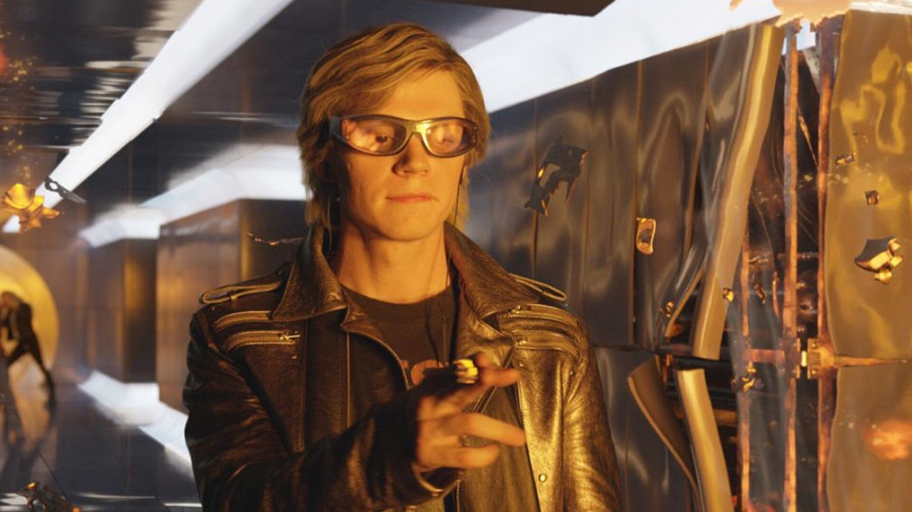

Ртуть — супергерой комиксов издательства Marvel Comics и их адаптаций, созданный писателем Стэном Ли и художником-соавтором Джеком Кирби; первое его появление состоялось в комиксе The X-Men #4 (март 1964). Ртуть обладает сверхъестественной способностью передвигаться с запредельными скоростями; до недавнего времени он в пределах основной вселенной Marvel изображался человеком-мутантом, наделённым сверхъестественными способностями. Ртуть – Пьетро Максимофф (Pietro Maximoff) – уроженец восточноевропейской страны Заковии, где вырос вместе со своей сестрой-близнецом Вандой. Персонаж указан в титрах фильма Мстители: Эра Альтрона как Ртуть (англ. Quicksilver), но на экране его так никогда не называют. В стремлении помочь своей стране избавиться от раздоров, близнецы согласились на опыты главы одного из подразделений организации ГИДРА Вольфганга фон Штрукера. Штрукер завладел Скипетром Локи и с помощью него провёл опыты на близнецах, в результате которых они получили сверхспособности, в частности Пьетро получил способность передвигаться на сверхзвуковых скоростях и другие физические преимущества.
В 1963 Ртуть впервые появился вместе с сестрой Алой Ведьмой в составе Братства Мутантов, в X-Men #4 (март 1964). После нескольких кратких появлений в выпусках № 5 (май 1964), № 6 (июль 1964), № 7 (сент. 1964) и № 11 (май 1965) Пьетро и его сестра присоединились к Мстителям в Avengers #16 (май 1965).
Клептоман, у которого есть намеченная репутация воровства. Он очень саркастичен и остроумен, а Чарльз Ксавьер описал его как «Боль в заднице». Его личность комплиментирует его силу, он очень общительный.
Настоящее имя — Пье́тро Ма́ксимофф (англ. Pietro Maximoff)
Уроженец восточноевропейской страны Заковии
